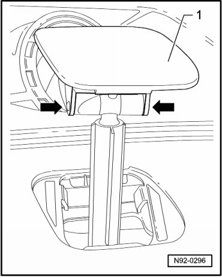
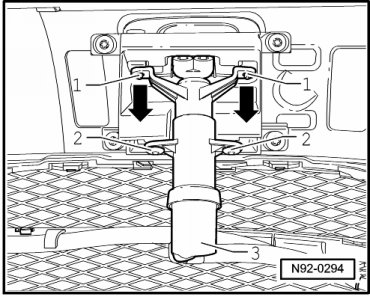

Headlamp Spray Nozzle Lift Cylinder
Headlamp Spray Nozzle Lift Cylinder
Removing
- Switch off ignition, switch off all electrical consumers and remove ignition key.
- Remove front bumper cover Removal and Installation.
- Pull out spray nozzle until it reaches stop and unclip cover cap - 1 - from pins - arrows -.

- Remove mounting bolts - 2 - of lift cylinder - 3 - and remove lift cylinder from pins - 1 - - arrows -.

- To loosen hose connection, press securing clip - 1 - - arrow - and disconnect hose connection.

- Remove lift cylinder.
Installing
Install in reverse order of removal, noting the following:
- Bleed headlamp washer system after completing assembly work --> [ Headlamp Washer System, Bleeding ] Headlamp Washer System, Bleeding.